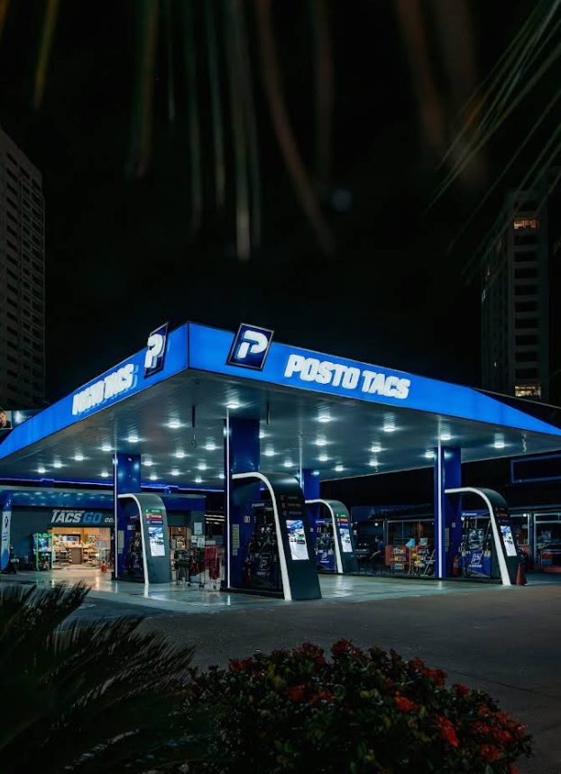
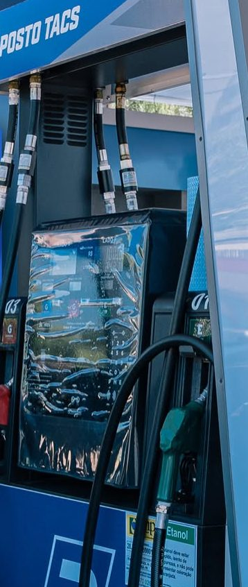
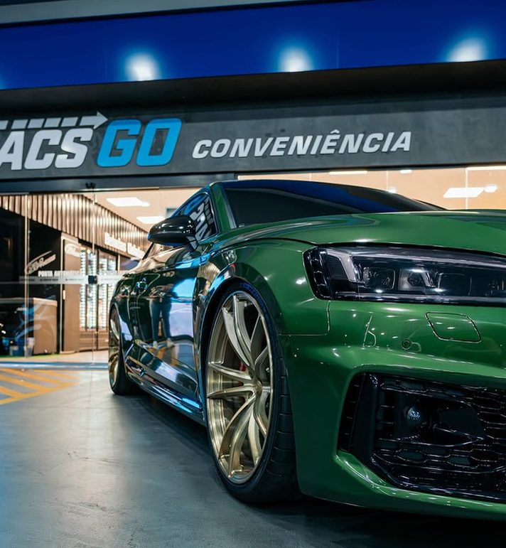
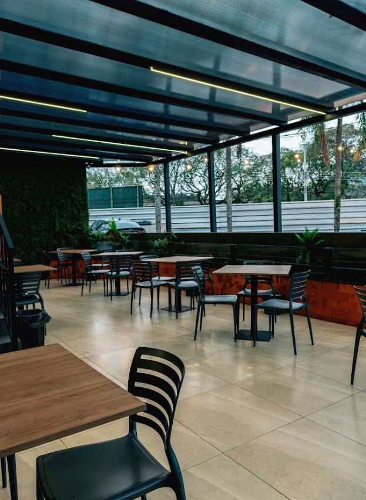
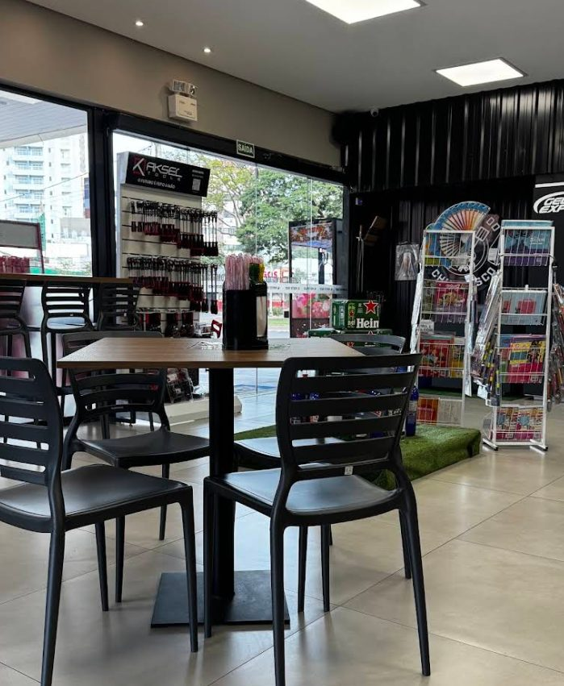

Posto de combustível em Maringá, PR
Aqui vale a parada.
Abasteça com combustível testado, agende a troca de óleo e faça uma pausa na conveniência Tacs Go. Tudo no mesmo lugar, aberto 24 horas, todos os dias.

- Horário Aberto 24 horas, todos os dias
- Endereço Praça José de Bonifácio, 44
- No mesmo lugar Combustível, óleo e conveniência

Combustível
Cada gota vale a pena.
No Posto Tacs o combustível é testado. Você abastece sabendo o que vai para o tanque e segue viagem com o motor protegido.
- Combustível testado
- Para abastecer sem dúvida sobre a qualidade.
- Motor protegido
- Combustível bom é o primeiro cuidado com o carro.
- Pista aberta 24 horas
- De dia, à noite ou de madrugada.
- Atendimento na bomba
- Elogiado pelos clientes nas avaliações.
Combustível muito bom, nunca tive problemas.
Troca de óleo
Óleo em dia, com hora marcada.
A troca de óleo do Posto Tacs funciona com agendamento. Você combina o horário pelo WhatsApp e chega com tudo acertado.
-
Chame no WhatsApp
Diga que quer agendar a troca de óleo.
-
Combine o dia e o horário
Escolha o que couber melhor na sua rotina.
-
Traga o carro
Enquanto isso, tem café na conveniência.
Tacs Go Conveniência
Uma pausa de verdade.
Na Tacs Go tem café, pães e bebidas geladas, com mesas para sentar, descansar e só depois seguir viagem.



- Café para a pausa no meio do caminho.
- Pães para o lanche ou para levar.
- Bebidas geladas, inclusive cerveja.
- Mesas no salão e na área coberta.
Se for dirigir, não beba.
Avaliações
Quem parou conta como foi.
Hoje passei neste posto de gasolina e tive uma experiência excelente! Fui muito bem atendida, com muita educação, atenção e agilidade.
Melhor lugar que já abasteci. Atendimento excepcional, combustível muito bom, nunca tive problemas. Ótimo preço, excelente localização. Muito obrigado por entregar um serviço com tanta excelência assim. Parabéns!
Atendimento excelente no período da madrugada. Fui muito bem atendido pelo Micael e pelo frentista Ederson, que foram educados, prestativos e atenciosos.
Onde fica
Na Praça José de Bonifácio.
- Endereço Praça José de Bonifácio, 44, Maringá, PR (abre o mapa em nova aba)
- Horário Aberto 24 horas, todos os dias
- WhatsApp (44) 99114-4534 (abre em nova aba)
- Instagram @postotacs (abre em nova aba)
Tanque cheio, óleo em dia e um café para seguir.
O Posto Tacs está aberto agora. Venha abastecer ou chame no WhatsApp para tirar dúvidas e agendar a troca de óleo.